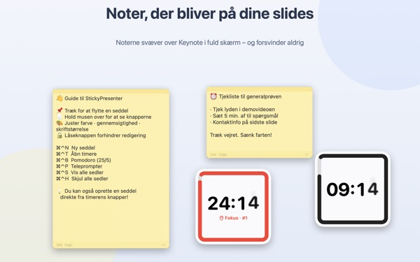
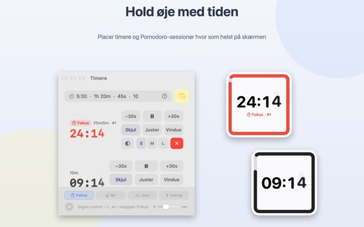
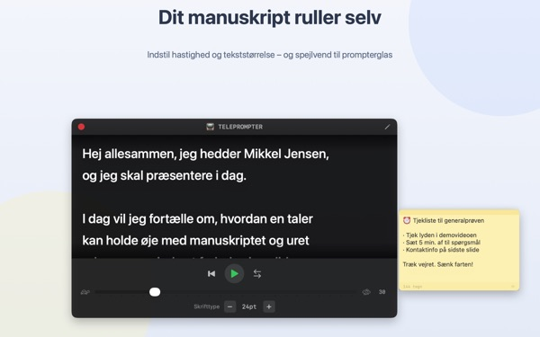
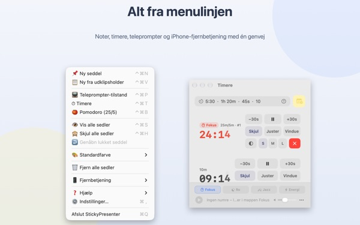

Manuskript og resttid
lige på sliden
Sæt Keynote i fuld skærm, og dine sedler og din timer bliver liggende ovenpå. De tager aldrig fokus fra præsentationsappen, så din klikker skifter stadig slides.
Alle funktioner er gratis. Kræver macOS 14 eller nyere.

Prøv det på en slide
Skriv en tid, som du ville gøre i appen. Tryk på 15s, og se hvordan widgetten advarer dig, når tiden er ved at løbe ud.
Hvor gør du af manuskript og ur, når du præsenterer?
Præsentationsvisningen kræver en ekstra skærm, og et blik på armbåndsuret lægger publikum altid mærke til. Måske har du sat en papirlap på din bærbare og set den falde af. StickyPresenter sætter manuskriptet og resttiden lige over sliden, hvor dine øjne i forvejen er.
Et blik, og du ved, hvor lang tid der er tilbage
En firkantet widget i hjørnet viser resttiden. Den bliver rød, når slutningen nærmer sig, og når tiden er gået, lyder et signal, og kanten blinker.
Skriv tider, som det falder dig ind, fx 5:30 eller 1h 20m, eller skriv 25/5 for en pomodoro, der skifter mellem fokus og pause. Åbn en timer i sit eget vindue for kun at dele det vindue via skærmdeling eller AirPlay.

Læs manuskriptet, og kig i kameraet
Teleprompteren ruller dit manuskript i det tempo, du vælger, og stopper selv ved slutningen. Kopiér manuskriptet, tryk ⌘⌃P, og den åbner med teksten.
Der er spejlvending til teleprompterudstyr med spejlglas, og tempo og skriftstørrelse er der stadig næste gang.

Du forlader aldrig sliden
Appen kører diskret i menulinjen uden ikon i Dock og uden vinduer at holde styr på. Genveje som ⌘⌃N til en ny seddel og ⌘⌃T til timere virker selv i Keynote i fuld skærm.
På scenen kan du med den gratis iPhone-app Remote Controller for Sticky starte og sætte timeren på pause og flytte widgetten, hvis den dækker en slide.

Kom i gang i tre trin
- 1
Åbn appen
Et seddelsymbol dukker op i menulinjen, og første gang åbner en kort guide.
- 2
Tilføj en seddel og en timer
Kopiér manuskriptet og tryk
⌘⌃V, og skriv så længden på dit oplæg i timerfeltet. - 3
Gå i fuld skærm
Seddel og timer bliver liggende øverst.
Genveje og tidsformater
- ⌘⌃N
- Ny seddel
- ⌘⌃V
- Ny seddel fra udklipsholderen
- ⌘⌃T
- Vis eller skjul timere
- ⌘⌃B
- Start en pomodoro (25 min fokus, 5 min pause)
- ⌘⌃P
- Teleprompter
- ⌘⌃S · ⌘⌃H
- Vis eller skjul alle sedler
- 10
- Et tal alene betyder minutter (10 min)
- 5:30 · 1:15:00
- Minutter:sekunder, timer:minutter:sekunder
- 1h 20m · 45s
- Med enheder
- 25/5
- Fokus/pause på skift, indtil du stopper
Alle genveje bruger Kommando (⌘) og Ctrl (⌃) sammen og virker, selv når du er i en anden app. Timere kan gå op til 99:59:59.
Spørgsmål og svar
Er det virkelig gratis?
Ja. Alle funktioner er gratis, og iPhone-appen Remote Controller for Sticky er en separat, gratis app. Hvis appen hjælper dig, kan du give udvikleren drikkepenge under Indstillinger; det låser ikke noget op.
Kan jeg vise kun timeren ved skærmdeling eller spejling?
Ja. Med knappen Vindue i timerens række åbner du den som et almindeligt vindue. Så står den på listen over vinduer ved skærmdeling og AirPlay, og du kan dele kun den.
Jeg har skjult en timerwidget og kan ikke finde den.
Hold markøren over timerens række i timervinduet, så bliver widgettens plads markeret med en stiplet linje. Klik på Juster for at hente den tilbage ved siden af timervinduet.
Jeg kom til at lukke en seddel.
Brug Genåbn lukket seddel i menulinjen til at hente en af de seneste 20 tilbage. Sedler gemmes, mens du skriver, og kommer tilbage samme sted, når appen åbnes igen.
En genvej virker ikke.
Står den i guidens genvejstabel som Bruges af et andet program, har en anden app taget den først. Afslut den app, så virker genvejen igen. Der kræves ingen tilladelse til tilgængelighed.
Hvorfor beder Kamæleon-temaet om skærmoptagelse?
Kamæleon læser farven på skærmen bag widgetten og tilpasser sig, og det kræver den tilladelse. Intet gemmes eller sendes. Uden den virker temaerne System, Lyst og Mørkt som normalt.
Hvordan tilføjer jeg baggrundsmusik?
Vælg en stemning (Fokus, Ro, Jazz eller Energi) i musikbjælken nederst i timervinduet, så opretter appen en mappe til hver. Læg dine egne numre i, så spiller de i rækkefølge sammen med timeren. Appen kommer ikke med musik.
Fjernbetjeningen på iPhone kan ikke finde min Mac.
Tjek i denne rækkefølge: Kører StickyPresenter på Mac'en (ikon i menulinjen)? Er begge enheder på samme Wi‑Fi og ikke på et gæstenetværk eller mobildata? Er Lokalt netværk tilladt under Anonymitet & sikkerhed på både iPhone og Mac? Er VPN slået fra?
Fjernbetjeningen siger, at parringskoden er forkert.
Indtast den firecifrede kode, der lige nu står under Fjernbetjening i Mac'ens menulinje. Har du klikket på Ny parringskode, virker kun den nye. Efter første parring forbinder den, så snart du åbner appen.
Kan andre styre min timer?
Ikke uden din kode. Mac'en accepterer kun fjernbetjeninger, der har tastet den rigtige kode, via en krypteret direkte forbindelse på dit lokale netværk. Har nogen set koden, så brug Ny parringskode eller Glem parrede fjernbetjeninger under Fjernbetjening i menulinjen.
Hvor gemmes mine sedler og manuskripter?
Kun på denne Mac. Ingen konto, ingen reklamer, og intet sendes på nettet ud over anonym brugsstatistik og feedback, du selv vælger at sende.
Spørgsmål, fejl eller idéer? Skriv til mizzking75@gmail.com.